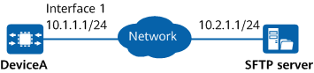

A customized JSON script is stored on an SFTP server. O&M personnel want to use EVA to collect routing information, interface diagnostic information, and device health information from devices. The JSON script is a PMI script. The script defines the commands for collecting routing information, interface diagnostic information, and device health information.

Compile a JSON script and define events, strategies, and tasks in the script.
Upload the JSON script to the device.
Install and register the JSON script.
# Compile a customized script CollectInformation.json to collect routing information, interface diagnostic information, and device health information. After the script is executed, you can collect information obtained using the display bgp peer, display isis peer, display ospf peer, display interface troubleshooting, display interface counters errors, display debugging, display device, and display health commands.
{"inspection_1":{"description":"Collect IP routing information","events":{"e1":{"trigger":"eva.singleCollect()"}},"strategy":"e1","tasks":{"mainTask":{"parameters":{"IProute_cmdArray":["display bgp peer","display isis peer","display ospf peer"]},"action":"eva.cliArray(\"user\",${IProute_cmdArray})"}}}}
{"inspection_2":{"description":"Collect statistics on error packets and diagnosis information on the interfaces","events":{"e1":{"trigger":"eva.singleCollect()"}},"strategy":"e1","tasks":{"mainTask":{"parameters":{"Interface_cmdArray":["display interface troubleshooting","display interface counters errors",]},"action":"eva.cliArray(\"user\",${Interface_cmdArray})"}}}}
{"inspection_3":{"description":"Collect system management information","events":{"e1":{"trigger":"eva.singleCollect()"}},"strategy":"e1","tasks":{"mainTask":{"parameters":{"Health_cmdArray":["display debugging","display device","display health"]},"action":"eva.cliArray(\"user\",${Health_cmdArray})"}}}}
# Configure DeviceA functioning as an SFTP client to download the JSON script CollectInformation.json from the SFTP server. For details, see "Managing Files Using SFTP" in CLI Configuration Guide > Basic Configuration > File System Management Configuration.
<HUAWEI> system-view [HUAWEI] sysname DeviceA [DeviceA] sftp client-transfile get host-ip 10.2.1.1 username client001 password Helloworld@6789 sourcefile CollectInformation.json Trying 10.2.1.1 ... Press CTRL+K to abort Connected to 10.2.1.1 ... Remote file: /CollectInformation.json ---> Local file: /CollectInformation.json Downloading the file. Please wait.. Downloading file successfully ended. File download is completed in 1 seconds. [DeviceA] quit
<DeviceA> install eva script CollectInformation.json inspection
# Display the script registration status.
<DeviceA> display eva register-status Inspection install status: running Inspection data path: flash:/eva/eva_inspection_20211109154918.zip Total: 6 -------------------------------------------------------------------------- FileName Status FaultInfo -------------------------------------------------------------------------- cpuHigh.py Success - memHigh.py Success - inspection_1 Success - inspection_2 Success - inspection_3 Success - --------------------------------------------------------------------------
# Display the script running status.
<DeviceA> display eva script-item status
Inspection running status: running
---------------------------------------------------------------------------------------------------------------
Script-item Type RegisterTime Status LastExecTime Result
---------------------------------------------------------------------------------------------------------------
inspection_1 inspection 2023-5-09 15:50:11 Running - -
inspection_2 inspection 2023-5-09 15:50:15 Running - -
inspection_3 inspection 2023-5-09 15:50:18 Idle - -
----------------------------------------------------------------------------------------------------------------
# After a PMI script is executed, it is automatically uninstalled. You can view the data collected during the PMI in the eva_inspection_latest date.zip file in the flash:/eva directory.
# Display the execution history of the script.
<DeviceA> display eva inspection history
------------------------------------------------------------------------------------------------------------------------
RegisterTime FileName ServerType IpAddress Port UserName Status ResultFileName
------------------------------------------------------------------------------------------------------------------------
2023-5-09 15:50:10 CollectInformation.json - - - - Running -
------------------------------------------------------------------------------------------------------------------------